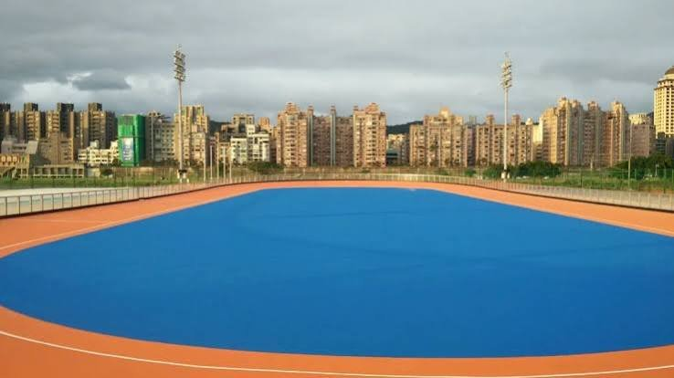

行前通知・比賽
115年全國中正盃
行前通知｜115學年度第48屆中正盃全國溜冰錦標賽

重要連結
ℹ️比賽資訊
📅
比賽日期
11/13（五）–11/15（日）
共3天・自由式輪滑・UTC+8
👕
服裝
花樁表演服 / 黃T
📍
🎒
攜帶物品
直排輪全套護具（安全帽）防曬物品水個人證件太陽眼鏡椅子野餐墊雨具運動飲料涼感巾備用輪子
🧾
補助
收據每年兩次・餐費每人每日300
⏰本隊場次・直接決賽
| 日期時間 | 項目／本隊 |
|---|---|
| 11/13（五） 08:45–12:30 | 場次3 高中男子個人花式繞樁 黃靖丞 385 治平高中 |
| 11/13（五） 08:45–12:30 | 場次4 高中女子個人花式繞樁 陳宥滋 386 陽明高中 |
| 11/13（五） 13:30–18:00 | 場次6 國中女子個人花式繞樁 鄒亦晴 388 中興國中 劉芊郁 389 龍潭國中 劉睿淇 390 龍潭國中 |
| 11/13（五） 13:30–18:00 | 場次8 國小女子個人花式繞樁 陳宥妧 384 大埔國小 |
| 11/14（六） 08:45–11:00 | 場次13 前溜雙足S形・A場 國小中年級女子 陳宥妧 384 大埔國小 |
| 11/14（六） 11:15–12:00 | 場次21 前溜單足S形・A場 國小中年級女子 陳宥妧 384 大埔國小 |
| 11/15（日） 14:30–18:00 | 場次44 高中女子花式煞停 陳宥滋 386 陽明高中 |
以上為項目時段，實際上場依現場廣播；集合時間另行通知。
🏫學校統編
| 統編 | 學校 |
|---|---|
| 44424012 | 龍潭國中 桃園市立龍潭國民中學 |
| 36445338 | 陽明高中 桃園市立陽明高級中等學校 |
| 21506005 | 大埔國小 桃園市龜山區大埔國民小學 |
| 43861844 | 中興國中 桃園市立中興國民中學 |
| 45001503 | 治平高中 治平學校財團法人桃園市治平高級中等學校 |
治平高中來源：data.gov.tw/dataset/75136
📢注意事項
- 1
學生組請備妥學生證影本或附有相片之在學證明供大會抽驗。
- 2
國小中年級（含）以下速度過樁選手需配戴全套護具及安全帽，其餘組建議配戴。
- 3
迎風地板比較黏，請所有人提前作場地適應。培林可以提前清洗上油，增加滑順度。祝所有孩子做出最好的發揮，取得佳績！